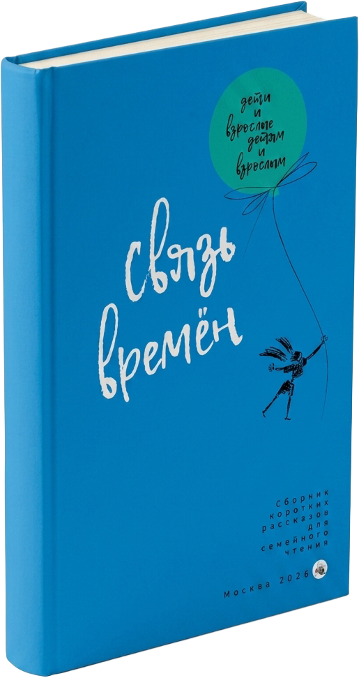

§ 05
Об авторе и редакции

- Издательство
- Фонд «Живая книга», Москва
- Год
- 2026
- Объём
- 208 страниц
- Составители
- С. Агачер, В. Коркунов, И. Михайлов
- ISBN
- 978‑5‑6043650‑5‑2
Сборник финалистов международного конкурса семейного рассказа — о преемственности поколений, о свете памяти и о том, что делает нас родными.

Сборник «Связь времён» представляет собой антологию произведений финалистов международного конкурса семейного рассказа, изданную под руководством Софии Агачер. В текстах отражена преемственность поколений, где личные воспоминания авторов о детстве, родителях и традициях служат защитой от забвения в эпоху цифровых технологий.
Истории охватывают широкий спектр тем: от трогательных бесед правнуков с предками до забавных случаев из школьной и деревенской жизни. Главная цель проекта — сохранить «прямое знание» и культурный код семьи, объединяя авторов разных возрастов и стран.
Сквозь призму искренних новелл читатель видит, как любовь и память формируют внутренний мир человека. Издание подчёркивает, что семейное творчество — необходимый свет, помогающий преодолевать жизненные трудности.
Бабушка складывала слова, как складывают простыни: ровно, с запахом ветра и лаванды. Так и память — если её сложить правильно, она не мнётся.Из рассказа · «Комната с окном во двор»
Мы разучились слышать друг друга, потому что перестали жить в одном доме. А ведь достаточно поставить два стула у окна — и время начинает течь общее.Из предисловия · София Агачер
Дед говорил: «Помни имена. Пока помнишь имя — человек рядом». И я помню — семь поколений, до самой той войны, о которой у нас не принято громко.Из рассказа · «Семь имён»